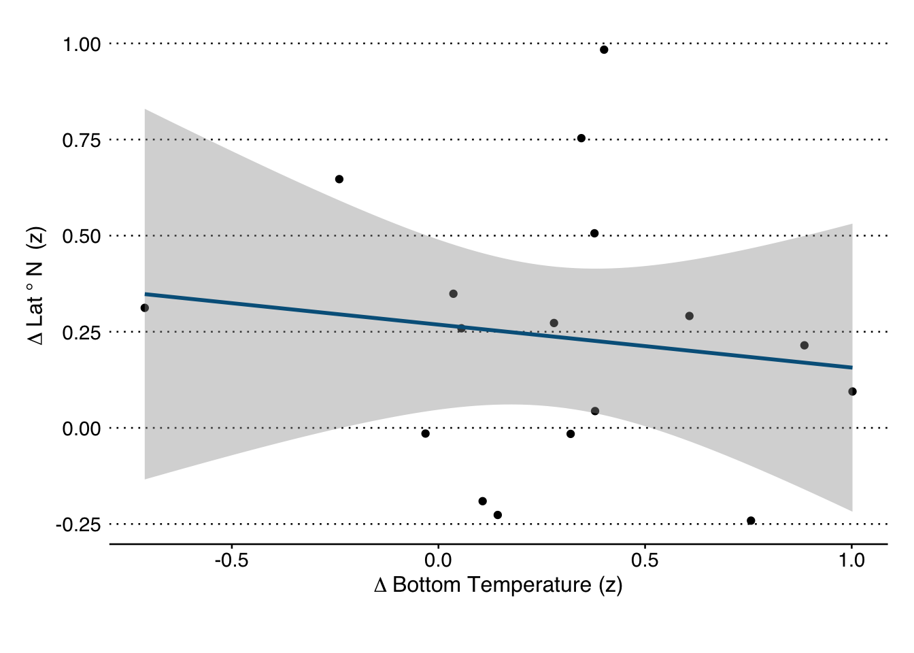

Species Encounter Temperature
Environmental Conditions at Encounter Locations for Marine Species
Encounter Temperatures of Size-at-Age Species
Species encountering temperature changes may respond to a changing environment in a number of ways. One approach is that species may choose to change location to a more suitable environment. However; this approach may not be an option for all species. Certain species, and individuals of other species, may lack the mobility/awareness needed to relocate and must survive/persist in the new environment.
This document will look at the different temperatures that species have been caught at. Temperatures will be taken from the CTD casts deployed as part of the groundfish survey to take advantage of bottom temperatures.
The general hypothesis follows that species that are better able to track favorable temperatures should experience a lesser physiological toll than species that are unable to track temperature change. Changes in size-at-age should consequently be smaller in highly mobile species than less adaptable ones.
Species Used:
The species used here will match the 16 species included as part of the size-at-age analysis. Those species are:
Code
# Size at age species
saa_species <- c("acadian redfish", "american plaice",
"atlantic cod", "atlantic herring",
"atlantic mackerel", "black sea bass",
"butterfish", "haddock", "pollock", "red hake",
"scup", "silver hake", "summer flounder",
"white hake", "winter flounder",
"witch flounder", "yellowtail flounder")
# table for printing
spec_df <- data.frame("Species" = saa_species)
spec_df %>% knitr::kable()| Species |
|---|
| acadian redfish |
| american plaice |
| atlantic cod |
| atlantic herring |
| atlantic mackerel |
| black sea bass |
| butterfish |
| haddock |
| pollock |
| red hake |
| scup |
| silver hake |
| summer flounder |
| white hake |
| winter flounder |
| witch flounder |
| yellowtail flounder |
Data for these 17 species comes from fisheries independent trawl survey data collected by NOAA and the NEFSC.
Code
# Load the regional temperatures from {targets}
withr::with_dir(rprojroot::find_root('_targets.R'),
tar_load(nefsc_stratified))
# Filter to just them, and the two time regimes
trawldat <- nefsc_stratified %>%
filter(comname %in% saa_species,
est_year >= 2000)
# Pull the main columns to speed things up
trawldat <- trawldat %>%
select(cruise6, station, stratum, tow, survey_area,
svvessel, source, est_year, est_towdate,
season, decdeg_beglat, decdeg_beglon,
avgdepth, bottemp, comname, scientific_name,
abundance, biomass_kg,
catchsex, sum_weight_kg)
# Set up the regimes
trawldat <- trawldat %>%
filter(between(est_year, 2000, 2019)) %>%
mutate(temp_regime = ifelse(est_year < 2010, "Early Regime", "Warm Regime"))Code
# Summarize to total biomass per tow:
#### WORKING HERE ####
# 1. station_totals = biomass and abundance from each tow for all species
# Totals up the abundance and biomass across sex*
station_totals <- trawldat %>%
group_by(est_year, survey_area, stratum, tow, est_towdate, avgdepth, bottemp, decdeg_beglat, decdeg_beglon, temp_regime, comname) %>%
summarise(
biomass_kg = sum(biomass_kg, na.rm = T),
.groups = "drop")
# 2. yrly_avgs = average and sd of biomass
year_avgs <- station_totals %>%
group_by(temp_regime, comname, est_year) %>%
summarise(
total_biomass = sum(biomass_kg),
avg_biomass = mean(biomass_kg),
biomass_sd = sd(biomass_kg),
avg_depth = weightedMean(avgdepth, w = biomass_kg, na.rm = T),
avg_temp = weightedMean(bottemp, w = biomass_kg, na.rm = T),
avg_lat = weightedMean(decdeg_beglat, w = biomass_kg, na.rm = T),
avg_lon = weightedMean(decdeg_beglon, w = biomass_kg, na.rm = T),
depth_sd = weightedSd(avgdepth, w = biomass_kg, na.rm = T),
temp_sd = weightedSd(bottemp, w = biomass_kg, na.rm = T),
lat_sd = weightedSd(decdeg_beglat, w = biomass_kg, na.rm = T),
lon_sd = weightedSd(decdeg_beglon, w = biomass_kg, na.rm = T),
.groups = "drop"
)
# Same but the periods as a whole
regime_avgs <- station_totals %>%
group_by(temp_regime, comname) %>%
summarise(
total_biomass = sum(biomass_kg),
avg_biomass = mean(biomass_kg),
biomass_sd = sd(biomass_kg),
avg_depth = weightedMean(avgdepth, w = biomass_kg, na.rm = T),
avg_temp = weightedMean(bottemp, w = biomass_kg, na.rm = T),
avg_lat = weightedMean(decdeg_beglat, w = biomass_kg, na.rm = T),
avg_lon = weightedMean(decdeg_beglon, w = biomass_kg, na.rm = T),
depth_sd = weightedSd(avgdepth, w = biomass_kg, na.rm = T),
temp_sd = weightedSd(bottemp, w = biomass_kg, na.rm = T),
lat_sd = weightedSd(decdeg_beglat, w = biomass_kg, na.rm = T),
lon_sd = weightedSd(decdeg_beglon, w = biomass_kg, na.rm = T),
.groups = "drop"
)
#### ROAD BLOCK ####
# What is the reference point to standardize against?
# option 1: what is the variance in station measurements
# option 2: weight that by the biomass there? no, right?
# variance within a period, or overall
# Variance specific for each species, ya?
# Variance across all years within each species
global_benchmarks <- station_totals %>%
group_by(comname) %>%
summarise(
avg_biomass = mean(biomass_kg),
biomass_sd = sd(biomass_kg),
avg_depth = weightedMean(avgdepth, w = biomass_kg, na.rm = T),
avg_temp = weightedMean(bottemp, w = biomass_kg, na.rm = T),
avg_lat = weightedMean(decdeg_beglat, w = biomass_kg, na.rm = T),
avg_lon = weightedMean(decdeg_beglon, w = biomass_kg, na.rm = T),
depth_sd = weightedSd(avgdepth, w = biomass_kg, na.rm = T),
temp_sd = weightedSd(bottemp, w = biomass_kg, na.rm = T),
lat_sd = weightedSd(decdeg_beglat, w = biomass_kg, na.rm = T),
lon_sd = weightedSd(decdeg_beglon, w = biomass_kg, na.rm = T),
.groups = "drop"
)Code
#### Old code
# Standardize the biomass by what the total catch was that period
# These are then used as weights for mean/median estimates
# Un-Stratified abundance
# Un-Stratified length-weight biomass
# Un-stratified, all-size Biomass
# trawldat <- trawldat %>%
# group_by(comname, temp_regime) %>%
# mutate(
# group_abund = sum(numlen_adj, na.rm = T),
# group_bio = sum(biom_per_lclass, na.rm = T)) %>%
# ungroup() %>%
# mutate(
# abund_wt = numlen_adj / group_abund,
# biom_wt = biom_per_lclass / group_bio,
# temp_regime = factor(temp_regime, levels = c("Early Regime", "Warm Regime")))Bottom Temperatures
Using the bottom temperatures sampled before each tow, and the biomass caught at each tow, the following weighted distributions can be generated for what the conditions were at each location these species were caught.
Code
# What were temps doing over the whole region:
oisst_all <- oisst_access_timeseries("nmfs_trawl_regions", poly_name = "inuse strata", mac_os = "mojave")
# Make Yearly averages
oisst_yrs <- oisst_all %>%
mutate(time = as.Date(time)) %>%
group_by(year = lubridate::year(time)) %>%
summarise(
temp = mean(area_wtd_sst),
clim = mean(area_wtd_clim),
anom = mean(area_wtd_anom)) %>%
filter(between(year, 2000, 2019))
ggplot(oisst_yrs, aes(year, anom)) +
geom_line(linetype = 2, size = 0.75) +
geom_point(size = 2, color = gmri_cols("gmri blue")) +
labs(title = "Survey Area Temperature Anomalies",
x = "Year",
y = "Temperature Anomaly °C")
Code
# Yearly averages
# Join and Scale by Global Averages
temp_yrly <- weighted_df_fun(bottemp, est_year, temp_regime) %>%
left_join(select(global_benchmarks, c("comname", "avg_temp", "temp_sd"))) %>%
mutate(biom_z = (biom_mu - avg_temp) / temp_sd)
# Plot Each timeline
temp_yrly %>%
ggplot(aes(est_year, biom_z, color = temp_regime)) +
geom_hline(aes(yintercept = 0, color = "Overall Average"), size = 1, linetype = 1) +
geom_path(aes(group = comname), linetype = 1, color = "gray50", size = 0.5, alpha = 0.2) +
geom_jitter(width = 0.1, size = 2) +
scale_color_gmri() +
labs(
title = "Shift in Bottom Temperatures of Catch Locations",
subtitle = "Yearly averages weighted by biomass, scaled against all-year average.",
y = "Bottom Temperature (z)",
x = "",
color = "Time Period",
fill = "Time Period") +
theme(#axis.text.y = element_blank(),
strip.text.y = element_text(size = 7, angle = 0, hjust = 0),
legend.position = "bottom")
Code
# Run weighting function for bottom temp
temp_change <- weighted_df_fun(bottemp, temp_regime) %>%
left_join(select(global_benchmarks, c("comname", "avg_temp", "temp_sd")), by = "comname") %>%
mutate(biom_z = (biom_mu - avg_temp) / temp_sd)
# Get results on significance
temp_results <- map_dfr(
.x = saa_species,
.f = test_signif,
dependent_var = "bottemp")
# Get regime averages
temp_avgs <- temp_change %>%
group_by(temp_regime) %>%
summarise(
biom_avg = round(mean(biom_mu),2),
biom_med = round(mean(biom_median), 2)
)
# Plot 1. Weighted by Stratified Biomass
# And another df for connecting the points
mu_segment_df <- temp_change %>%
select(comname, temp_regime, biom_mu) %>%
pivot_wider(names_from = "temp_regime",
values_from = c(biom_mu)) %>%
mutate(
# Track the Change in mean Locations
avg_shift = `Warm Regime` - `Early Regime`,
# Reorder the species factors by mean temperature preference
comname = fct_reorder(comname, `Early Regime`, .fun = median))
# Reorder factor by warm-tolerance in Early regime
temp_change <- temp_change %>%
mutate(comname = factor(comname, levels = levels(mu_segment_df$comname)))
# Make Density Plots for Each species
ggplot() +
ggforce::geom_link(data = mu_segment_df,
aes(x = `Early Regime`,
xend = `Warm Regime`,
y = 0,
yend = 0,
group = comname,
alpha = stat(index),
color = "Warm Regime"),
size = 0.75,
show.legend = FALSE) +
geom_point(data = temp_change ,
aes(x = biom_mu,
y = 0,
color = temp_regime),
size = 3,
show.legend = FALSE) +
facet_grid(comname~.) +
scale_fill_gmri() +
scale_color_gmri() +
scale_y_continuous(breaks = seq(0, 1, by = 1)) +
scale_x_continuous(breaks = seq(0, 30, by = 2)) +
labs(
title = "Shift in Bottom Temperatures of Catch Locations",
subtitle = "Biomass-weighted averages shown as points.",
y = "",
x = "Bottom Temperature \u00b0C",
color = "Time Period",
fill = "Time Period") +
theme(axis.text.y = element_blank(),
strip.text.y = element_text(size = 7, angle = 0, hjust = 0),
legend.position = "bottom")
For the following figure, the average of each temperature regime was scaled against the weighed average and standard deviation across all years.
Code
# And another df for connecting the points
z_segment_df <- temp_change %>%
select(comname, temp_regime, biom_z) %>%
pivot_wider(names_from = "temp_regime",
values_from = c(biom_z)) %>%
mutate(
# Track the Change in mean Locations
avg_shift = `Warm Regime` - `Early Regime`,
# Reorder the species factors to match the previous plots
comname = factor(comname, levels = levels(temp_change$comname)))
# Make Density Plots for Each species
ggplot() +
ggforce::geom_link(data = z_segment_df,
aes(x = `Early Regime`,
xend = `Warm Regime`,
y = 0,
yend = 0,
group = comname,
alpha = stat(index),
color = "Warm Regime"),
size = 0.75,
show.legend = FALSE) +
geom_point(data = temp_change ,
aes(x = biom_z,
y = 0,
color = temp_regime),
size = 3,
show.legend = FALSE) +
facet_grid(comname~.) +
scale_fill_gmri() +
scale_color_gmri() +
scale_y_continuous(breaks = seq(0, 1, by = 1)) +
scale_x_continuous(breaks = seq(-2, 2, by = 0.5)) +
labs(
title = "Shift in Relative Bottom Temperatures",
subtitle = "Standardized biomass-weighted averages shown as points.",
y = "",
x = "Bottom Temperature (z)",
color = "Time Period",
fill = "Time Period") +
theme(axis.text.y = element_blank(),
strip.text.y = element_text(size = 7, angle = 0, hjust = 0),
legend.position = "bottom")
Temperature Summary
Across all species the average temperature (by biomass) has increased from 8.59 to 9.09 for a change in 0.5°C.
14 of the 17 showed a significant change in temperature among the different regimes indicating a change in habitat conditions regardless of avoidance strategy.
In the following figure the biomass densities for the early and warm temperature regimes are shown for each species. The distributions are weighted by biomass of catch at each location. The weighed means are also shown for each regime.
Center of Latitude
The (weighted) centers of latitude give an indication of whether a species is shifting its location Northward or Southward.
Code
# Weighted mean Locations
lat_yrly <- weighted_df_fun(decdeg_beglat, est_year, temp_regime) %>%
left_join(select(global_benchmarks, c("comname", "avg_lat", "lat_sd")), by = "comname") %>%
mutate(biom_z = (biom_mu - avg_lat) / lat_sd)
# Plot Each timeline
lat_yrly %>%
ggplot(aes(est_year, biom_z, color = temp_regime)) +
geom_hline(aes(yintercept = 0, color = "Overall Average"), size = 1, linetype = 1) +
geom_path(aes(group = comname), linetype = 1, color = "gray50", size = 0.5, alpha = 0.2) +
geom_jitter(width = 0.1, size = 2) +
scale_color_gmri() +
labs(
title = "Shift in Latitude of Catch Locations",
subtitle = "Yearly averages weighted by biomass, scaled against all-year average.",
y = "Center of Biomass Latitude (z)",
x = "",
color = "Time Period",
fill = "Time Period") +
theme(#axis.text.y = element_blank(),
strip.text.y = element_text(size = 7, angle = 0, hjust = 0),
legend.position = "bottom")
Code
# Weighted mean Locations
lat_change <- weighted_df_fun(decdeg_beglat, temp_regime) %>%
left_join(select(global_benchmarks, c("comname", "avg_lat", "lat_sd")), by = "comname") %>%
mutate(biom_z = (biom_mu - avg_lat) / lat_sd)
# Get regime averages
lat_avgs <- lat_change %>%
group_by(temp_regime) %>%
summarise(
biom_avg = round(mean(biom_mu),2),
biom_med = round(mean(biom_median), 2))
# Plot 1. Weighted by Stratified Biomass
# And another df for connecting the points
lat_segment_df <- lat_change %>%
select(comname, temp_regime, biom_mu) %>%
pivot_wider(names_from = "temp_regime",
values_from = c(biom_mu)) %>%
mutate(avg_shift = `Warm Regime` - `Early Regime`)
# Reorder the species factors by mean temperature preference
lat_segment_df <- lat_segment_df %>%
mutate(comname = fct_reorder(comname, `Early Regime`, .fun = median, .desc = T))
# Reorder factor by warm-tolerance in Early regime
lat_change <- lat_change %>%
mutate(comname = factor(comname, levels = levels(lat_segment_df$comname)))
# Make a Plot of Major cities/landmarks for reference
lat_references <- data.frame(
"cities" = c("NY, NY", "Chatham, MA", "Cape May, NJ"),
"lat" = c( 40.72, 41.68, 38.93) )
# Plot Latitude Change with City References
ggplot() +
geom_link(data = lat_segment_df,
aes(y = `Early Regime`,
yend = `Warm Regime`,
x = comname,
xend = comname,group = comname,
alpha = stat(index),
color = "Warm Regime"),
size = 0.75,
show.legend = FALSE) +
geom_point(data = lat_change ,
aes(x = comname,
y = biom_mu,
color = temp_regime),
size = 3,
show.legend = FALSE) +
#geom_hline(data = lat_references, aes(yintercept = lat), color = "gray60") +
geom_label(data = lat_references, aes(x = 3.5, label = cities, y = lat)) +
scale_fill_gmri() +
scale_color_gmri() +
scale_y_continuous(breaks = seq(30, 60, by = 2)) +
labs(
title = "Shift in Center of Biomass Latitudes",
subtitle = "Distributions weighted by biomass, weighted means shown as points.",
y = "Center of Biomass Latitude \u00b0N",
x = "",
color = "Time Period",
fill = "Time Period") +
theme(axis.text.x = element_text(angle = 90, vjust = 0.5),
strip.text.x = element_text(size = 7, angle = 0, hjust = 0),
legend.position = "bottom")
Species showing the largest latitudinal shifts include Atlantic mackerel, scup, and Black Sea Bass. These species all have center of biomass latitudes South of Cape Cod, and have some of the largest potential for Northward movements within the survey area.
For the following figure, the average of each temperature regime was scaled against the weighed average and standard deviation across all years.
Code
# And another df for connecting the points
z_segment_df <- lat_change %>%
select(comname, temp_regime, biom_z) %>%
pivot_wider(names_from = "temp_regime",
values_from = c(biom_z)) %>%
mutate(
# Track the Change in mean Locations
avg_shift = `Warm Regime` - `Early Regime`,
# Reorder the species factors to match the previous plots
comname = factor(comname, levels = levels(lat_change$comname)))
# Make Density Plots for Each species
ggplot() +
geom_link(data = z_segment_df,
aes(y = `Early Regime`,
yend = `Warm Regime`,
x = comname,
xend = comname,group = comname,
alpha = stat(index),
color = "Warm Regime"),
size = 0.75,
show.legend = FALSE) +
geom_point(data = lat_change ,
aes(x = comname,
y = biom_z,
color = temp_regime),
size = 3,
show.legend = FALSE) +
scale_fill_gmri() +
scale_color_gmri() +
scale_y_continuous(breaks = seq(-2, 2, by = 0.5)) +
labs(
title = "Shift in Standardized Center of Biomass Latitudes",
subtitle = "Distributions weighted by biomass, weighted means shown as points.",
y = "Center of Biomass Latitude (z)",
x = "",
color = "Time Period",
fill = "Time Period") +
theme(axis.text.x = element_text(angle = 90, vjust = 0.5),
strip.text.x = element_text(size = 7, angle = 0, hjust = 0),
legend.position = "bottom")
Latitude Summary
Across all species the average Latitude at capture has increased from 41.39 to 41.61 for a change in 0.22 ° Latitude.
Capture Depth
Depth is highly correlated with temperature and may be an avenue for species to follow their thermal preferences without moving Northward. If species are moving deeper without changing their temperature habitats this may suggest a different driver is at play.
Code
# Weighted mean Locations
depth_yrly <- weighted_df_fun(avgdepth, est_year, temp_regime) %>%
left_join(select(global_benchmarks, c("comname", "avg_depth", "depth_sd")), by = "comname") %>%
mutate(biom_z = (biom_mu - avg_depth) / depth_sd)
# Plot Each timeline
depth_yrly %>%
ggplot(aes(est_year, biom_z, color = temp_regime)) +
geom_hline(aes(yintercept = 0, color = "Overall Average"), size = 1, linetype = 1) +
geom_path(aes(group = comname), linetype = 1, color = "gray50", size = 0.5, alpha = 0.2) +
geom_jitter(width = 0.1, size = 2) +
scale_color_gmri() +
labs(
title = "Shift in Depth of Catch Locations",
subtitle = "Yearly averages weighted by biomass, scaled against all-year average.",
y = "Center of Biomass Depth (z)",
x = "",
color = "Time Period",
fill = "Time Period") +
theme(#axis.text.y = element_blank(),
strip.text.y = element_text(size = 7, angle = 0, hjust = 0),
legend.position = "bottom")
Code
# Weighted mean Locations
depth_change <- weighted_df_fun(avgdepth, temp_regime) %>%
left_join(select(global_benchmarks, c("comname", "avg_depth", "depth_sd")), by = "comname") %>%
mutate(biom_z = (biom_mu - avg_depth) / depth_sd)
# Avg Depths
avg_depths <- depth_change %>%
group_by(temp_regime) %>%
summarise(
biom_avg = round(mean(biom_mu),2),
biom_med = round(mean(biom_median), 2))
# Plot 1. Weighted by Stratified Biomass
# And another df for connecting the points
depth_segment_df <- depth_change %>%
select(comname, temp_regime, biom_mu) %>%
pivot_wider(names_from = "temp_regime",
values_from = c(biom_mu)) %>%
mutate(avg_shift = `Warm Regime` - `Early Regime`)
# Reorder the species factors by mean temperature preference
depth_segment_df <- depth_segment_df %>%
mutate(comname = fct_reorder(comname, `Early Regime`, .fun = median, .desc = F))
# Reorder factor by warm-tolerance in Early regime
depth_change <- depth_change %>%
mutate(comname = factor(comname, levels = levels(depth_segment_df$comname)))
# Make Density Plots for Each species
ggplot() +
ggforce::geom_link(data = depth_segment_df,
aes(y = `Early Regime`,
yend = `Warm Regime`,
x = comname,
xend = comname,
alpha = stat(index),
color = "Warm Regime"),
size = 0.75,
show.legend = FALSE) +
geom_point(data = depth_change ,
aes(y = biom_mu,
x = comname,
color = temp_regime),
size = 3,
show.legend = FALSE) +
scale_fill_gmri() +
scale_color_gmri() +
scale_y_reverse(breaks = seq(0, 300, by = 50), limits = c(200,0)) +
labs(
title = "Shift in Depth of Catch Locations",
subtitle = "Distributions weighted by stratified biomass, weighted means shown as points.",
x = "",
y = "Average Depth (m)",
color = "Time Period",
fill = "Time Period") +
theme(axis.text.x = element_text(angle = 90, vjust = 0.5),
legend.position = "bottom")
Code
# And another df for connecting the points
z_segment_df <- depth_change %>%
select(comname, temp_regime, biom_z) %>%
pivot_wider(names_from = "temp_regime",
values_from = c(biom_z)) %>%
mutate(
# Track the Change in mean Locations
avg_shift = `Warm Regime` - `Early Regime`,
# Reorder the species factors to match the previous plots
comname = factor(comname, levels = levels(depth_change$comname)))
# Make Density Plots for Each species
ggplot() +
geom_link(data = z_segment_df,
aes(y = `Early Regime`,
yend = `Warm Regime`,
x = comname,
xend = comname,group = comname,
alpha = stat(index),
color = "Warm Regime"),
size = 0.75,
show.legend = FALSE) +
geom_point(data = depth_change ,
aes(x = comname,
y = biom_z,
color = temp_regime),
size = 3,
show.legend = FALSE) +
scale_fill_gmri() +
scale_color_gmri() +
scale_y_continuous(breaks = seq(-2, 2, by = 0.5)) +
labs(
title = "Shift in Standardized Center of Biomass Depth",
subtitle = "Distributions weighted by biomass, weighted means shown as points.",
y = "Center of Biomass Depth (z)",
x = "",
color = "Time Period",
fill = "Time Period") +
theme(axis.text.x = element_text(angle = 90, vjust = 0.5),
strip.text.x = element_text(size = 7, angle = 0, hjust = 0),
legend.position = "bottom")
Across all species the average depth (by biomass) has increased from 117.35 to 124.12 for a change in 6.77 meters.
Center of Biomass
Using both Lat/Lon we can determine a center of biomass, and how that has changed between regimes for each species.
Code
# Weighted mean Locations
center_coord_df <- station_totals %>%
group_by(comname, temp_regime) %>%
summarise(
biom_lat = weightedMean(decdeg_beglat, biomass_kg, na.rm = T),
biom_lon = weightedMean(decdeg_beglon, biomass_kg, na.rm = T),
.groups = "drop")
# Coord ranges to crop
xlim <- range(center_coord_df$biom_lon)
ylim <- range(center_coord_df$biom_lat)Code
# Make the map
ggplot() +
geom_sf(data = us_poly) +
geom_sf(data = canada) +
ggforce::geom_link2(
data = center_coord_df,
aes(x = biom_lon,
y = biom_lat,
group = comname,
alpha = stat(index),
color = "Warm Regime"),
size = 0.75,
show.legend = FALSE) +
geom_point(data = center_coord_df, aes(x = biom_lon, y = biom_lat, color = temp_regime), size = 3) +
ggrepel::geom_text_repel(data = filter(center_coord_df, temp_regime == "Warm Regime"),
aes(label = comname, x = biom_lon, y = biom_lat), size = 3) +
scale_color_gmri() +
coord_sf(xlim = xlim, ylim = ylim) +
map_theme(legend.position = "bottom") +
labs(color = "Temperature Regime", title = "Weighted-Mean Center of Biomass")
Move vs. Acclimate
Species can achieve similar outcomes through either moving deeper, or more Northward, or some combination of both.
Code
# Put metrics of species movements into one list/table:
change_datasets <- list(lat_change, depth_change, temp_change)
# Pick mean/median and whether we want biomass or Biomass weighting:
change_datasets <- map(change_datasets, function(x){
# Grab the variable
var_name <- distinct(x, var) %>% pull()
z_name <- str_c(var_name, "_z")
# Grab just those columns to compare across regimes:
# Pivot wider, and find difference
# Change in Standardized Means
mu_dat <- x %>% select(comname, temp_regime, biom_z) %>%
pivot_wider(values_from = biom_z, names_from = temp_regime) %>%
mutate(mu_change = `Warm Regime` - `Early Regime`) %>%
select(-c("Early Regime", "Warm Regime"))
#
#
return(setNames(mu_dat, c("comname", z_name)))
# Rejoin
#left_join(med_dat, mu_dat) %>% setNames(c("comname", med_name, mu_name))
})
# Join them
change_df <- left_join(change_datasets[[1]], change_datasets[[2]]) %>% left_join(change_datasets[[3]])
# Compare those features to the change in growthCode
ggplot(change_df, aes(avgdepth_z, decdeg_beglat_z)) +
geom_smooth(method = "lm", formula = y~x, color = gmri_cols("gmri blue")) +
geom_point() +
labs(x = expression(Delta~"Depth (z)"),
y = expression(Delta~"Lat"~degree~N~~"(z)"))
Code
ggplot(change_df, aes(bottemp_z, decdeg_beglat_z)) +
geom_point() +
geom_smooth(method = "lm", formula = y~x, color = gmri_cols("gmri blue")) +
labs(x = expression(Delta~"Bottom Temperature (z)"),
y = expression(Delta~"Lat"~degree~N~~"(z)"))
Code
ggplot(change_df, aes(bottemp_z, avgdepth_z)) +
geom_smooth(method = "lm", formula = y~x, color = gmri_cols("gmri blue")) +
geom_point() +
labs(x = expression(Delta~"Bottom Temperature (z)"),
y = expression(Delta~"Depth (z)"))